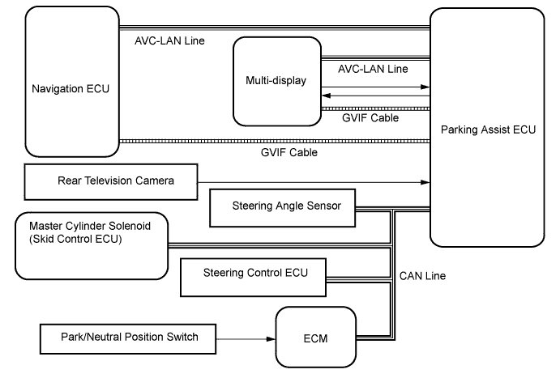

PARKING ASSIST MONITOR SYSTEM > SYSTEM DIAGRAM |

| Sender | Receiver | Signal | Line |
| Steering Angle Sensor | Parking Assist ECU | Steering angle signal | CAN |
| Navigation ECU | Parking Assist ECU | Vehicle angle data signal | AVC-LAN |
| ECM | Parking Assist ECU | Shift position signal | CAN |
| Skid Control ECU | Parking Assist ECU | Vehicle speed signal | CAN |
| Parking Assist ECU | Multi-display | Picture signal | GVIF |